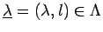
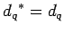

Let us first describe what we will take for
the set  occuring in the definition of
the cellular coalgebra:
occuring in the definition of
the cellular coalgebra:
According to the definition of a cellular coalgebra to each  a set must be assigned. We take:
Finally the basis elements themselves are defined by
Now, our principal aim is to prove the following
By Proposition 5.1 we may conclude immediately:
Another direct consequence of 7.1 can be obtained from [O2, Theorems 3.3 and 4.3].
At the end of this paper we will improve 7.2
by showing that the
bilinear form
 on the standard modules
is
nonzero for each
on the standard modules
is
nonzero for each  . By [GL, 3.10] this means
. By [GL, 3.10] this means
Let us first see how the involution of Theorem 7.1 arises.
It realizes matrix transposition for our quantum monoid.
On the generators
 this transposition map is defined
as in the classical case by
. Indeed, this gives a
well defined algebra map on
this transposition map is defined
as in the classical case by
. Indeed, this gives a
well defined algebra map on
 , since the coefficient matrices
of
, since the coefficient matrices
of  and
and  are symmetric (i.e.
and
)
implying
are symmetric (i.e.
and
)
implying
 and
and
thus, keeping the relations of
that algebra fixed. Furthermore, the endomorphisms
must have symmetric coefficient matrices, as well.
We calculate
and
and
thus, keeping the relations of
that algebra fixed. Furthermore, the endomorphisms
must have symmetric coefficient matrices, as well.
We calculate
and in a similar way
 holds
by definition (7).
This shows, that  factors
to an algebra map of
factors
to an algebra map of
 . From the comultiplication rule
(4) it directly follows that
. From the comultiplication rule
(4) it directly follows that  is an anti-coalgebra map.
This implies
axiom (C2*) of a cellular coalgebra.
is an anti-coalgebra map.
This implies
axiom (C2*) of a cellular coalgebra.
The verification of axiom (C3*) is the second easiest step
in the proof of Theorem 7.1, but we will give
it at the end of the paper
since some additional ingredients are needed.
The first statement of this theorem, which is axiom (C1*),
is the really hard one. It is the
 -analogue of [O2, Theorem 6.1]. To prove it
we will proceed in a similar way as there.
The difficulty is to show that
-analogue of [O2, Theorem 6.1]. To prove it
we will proceed in a similar way as there.
The difficulty is to show that  is a set of generators.
For that purpose the most important step
is a quantum symplectic version of the famous
straightening formula.
is a set of generators.
For that purpose the most important step
is a quantum symplectic version of the famous
straightening formula.